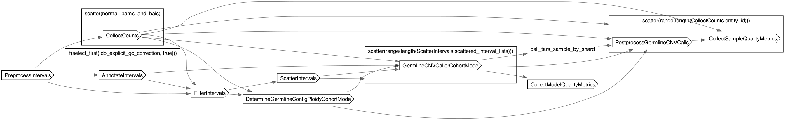

LRCNVs
LRCNVs
- description
- Workflow for creating a GATK GermlineCNVCaller denoising model and generating calls given a list of normal samples. Supports both WGS and WES. The intervals argument is required for both WGS and WES workflows and accepts formats compatible with the GATK -L argument (see https://gatkforums.broadinstitute.org/gatk/discussion/11009/intervals-and-interval-lists). These intervals will be padded on both sides by the amount specified by padding (default 250) and split into bins of length specified by bin_length (default 1000; specify 0 to skip binning, e.g., for WES). For WGS, the intervals should simply cover the chromosomes of interest.
- notes
- The intervals argument is required for both WGS and WES workflows and accepts formats compatible with the GATK -L argument (see https://gatkforums.broadinstitute.org/gatk/discussion/11009/intervals-and-interval-lists). These intervals will be padded on both sides by the amount specified by padding (default 250) and split into bins of length specified by bin_length (default 1000; specify 0 to skip binning, e.g., for WES). For WGS, the intervals should simply cover the chromosomes of interest.
- Intervals can be blacklisted from coverage collection and all downstream steps by using the blacklist_intervals argument, which accepts formats compatible with the GATK -XL argument (see https://gatkforums.broadinstitute.org/gatk/discussion/11009/intervals-and-interval-lists). This may be useful for excluding centromeric regions, etc. from analysis. Alternatively, these regions may be manually filtered from the final callset.
Inputs
Required
cohort_entity_id(String, required): Required. String identifier for the cohort used for denoising model generation.contig_ploidy_priors(File, required): Required. File containing contig ploidy priors.intervals(File, required): Required. Intervals file (in .bed format) containing the regions to be analyzed. For WGS, this should simply cover the chromosomes of interest. For WES, this should cover the target regions to be analyzed.normal_bais(Array[String]+, required): Required. Array of BAI index files for the normal samples to be used for denoising model generation.normal_bams(Array[String]+, required): Required. Array of BAM files for the normal samples to be used for denoising model generation.ref_map_file(File, required): Required. File containing the reference copy-number map.
Optional
allosomal_contigs(Array[String]?)bin_length(Int?)blacklist_intervals(File?): Optional. Intervals file (in .bed format) containing the regions to be excluded from analysis. For WGS, this may be useful for excluding centromeric regions, etc. from analysis. For WES, this may be useful for excluding regions that are not covered by the target capture kit.blacklist_intervals_for_filter_intervals(File?)collect_counts_enable_indexing(Boolean?)collect_counts_format(String?)cpu_for_determine_germline_contig_ploidy(Int?)cpu_for_germline_cnv_caller(Int?)do_explicit_gc_correction(Boolean?)extreme_count_filter_maximum_percentile(Float?)extreme_count_filter_minimum_percentile(Float?)extreme_count_filter_percentage_of_samples(Float?)feature_query_lookahead(Int?)gatk4_jar_override(File?)gcnv_active_class_padding_hybrid_mode(Int?)gcnv_adamax_beta_1(Float?)gcnv_adamax_beta_2(Float?)gcnv_caller_external_admixing_rate(Float?)gcnv_caller_internal_admixing_rate(Float?)gcnv_caller_update_convergence_threshold(Float?)gcnv_class_coherence_length(Float?)gcnv_cnv_coherence_length(Float?)gcnv_convergence_snr_averaging_window(Int?)gcnv_convergence_snr_countdown_window(Int?)gcnv_convergence_snr_trigger_threshold(Float?)gcnv_copy_number_posterior_expectation_mode(String?)gcnv_depth_correction_tau(Float?)gcnv_disable_annealing(Boolean?)gcnv_enable_bias_factors(Boolean?)gcnv_gc_curve_standard_deviation(Float?)gcnv_init_ard_rel_unexplained_variance(Float?)gcnv_initial_temperature(Float?)gcnv_interval_psi_scale(Float?)gcnv_learning_rate(Float?)gcnv_log_emission_samples_per_round(Int?)gcnv_log_emission_sampling_median_rel_error(Float?)gcnv_log_emission_sampling_rounds(Int?)gcnv_log_mean_bias_standard_deviation(Float?)gcnv_mapping_error_rate(Float?)gcnv_max_advi_iter_first_epoch(Int?)gcnv_max_advi_iter_subsequent_epochs(Int?)gcnv_max_bias_factors(Int?)gcnv_max_calling_iters(Int?)gcnv_max_copy_number(Int?)gcnv_max_training_epochs(Int?)gcnv_min_training_epochs(Int?)gcnv_num_gc_bins(Int?)gcnv_num_thermal_advi_iters(Int?)gcnv_p_active(Float?)gcnv_p_alt(Float?)gcnv_sample_psi_scale(Float?)low_count_filter_count_threshold(Int?)low_count_filter_percentage_of_samples(Float?)mappability_track_bed(File?)mappability_track_bed_idx(File?)maximum_gc_content(Float?)maximum_mappability(Float?)maximum_segmental_duplication_content(Float?)mem_gb_for_annotate_intervals(Int?)mem_gb_for_collect_counts(Int?)mem_gb_for_determine_germline_contig_ploidy(Int?)mem_gb_for_filter_intervals(Int?)mem_gb_for_germline_cnv_caller(Int?)minimum_gc_content(Float?)minimum_mappability(Float?)minimum_segmental_duplication_content(Float?)padding(Int?)ploidy_global_psi_scale(Float?)ploidy_mapping_error_rate(Float?)ploidy_mean_bias_standard_deviation(Float?)ploidy_sample_psi_scale(Float?)preemptible_attempts(Int?)segmental_duplication_track_bed(File?)segmental_duplication_track_bed_idx(File?)AnnotateIntervals.cpu(Int?)AnnotateIntervals.disk_space_gb(Int?)CollectCounts.cpu(Int?)CollectCounts.disk_space_gb(Int?)CollectModelQualityMetrics.cpu(Int?)CollectModelQualityMetrics.disk_space_gb(Int?)CollectModelQualityMetrics.mem_gb(Int?)CollectSampleQualityMetrics.cpu(Int?)CollectSampleQualityMetrics.disk_space_gb(Int?)CollectSampleQualityMetrics.mem_gb(Int?)DetermineGermlineContigPloidyCohortMode.disk_space_gb(Int?)DetermineGermlineContigPloidyCohortMode.output_dir(String?)FilterIntervals.cpu(Int?)FilterIntervals.disk_space_gb(Int?)GermlineCNVCallerCohortMode.disk_space_gb(Int?)GermlineCNVCallerCohortMode.output_dir(String?)PostprocessGermlineCNVCalls.cpu(Int?)PostprocessGermlineCNVCalls.disk_space_gb(Int?)PostprocessGermlineCNVCalls.mem_gb(Int?)PreprocessIntervals.cpu(Int?)PreprocessIntervals.disk_space_gb(Int?)PreprocessIntervals.mem_gb(Int?)ScatterIntervals.cpu(Int?)ScatterIntervals.disk_space_gb(Int?)ScatterIntervals.gatk4_jar_override(File?)ScatterIntervals.mem_gb(Int?)ScatterIntervals.output_dir(String?)
Defaults
gatk_docker(String, default="broadinstitute/gatk:4.1.7.0"): Optional. Docker image for the GATK tool. Default is broadinstitute/gatk:broadinstitute/gatk:4.1.7.0.maximum_number_events_per_sample(Int, default=1000)num_intervals_per_scatter(Int, default=10000): Optional. Number of intervals to process in each scatter. Default is 10000.ref_copy_number_autosomal_contigs(Int, default=2)AnnotateIntervals.use_ssd(Boolean, default=false)CollectCounts.use_ssd(Boolean, default=false)CollectModelQualityMetrics.use_ssd(Boolean, default=false)CollectSampleQualityMetrics.use_ssd(Boolean, default=false)DetermineGermlineContigPloidyCohortMode.use_ssd(Boolean, default=false)FilterIntervals.use_ssd(Boolean, default=false)GermlineCNVCallerCohortMode.use_ssd(Boolean, default=false)PostprocessGermlineCNVCalls.use_ssd(Boolean, default=false)PreprocessIntervals.use_ssd(Boolean, default=false)ScatterIntervals.use_ssd(Boolean, default=false)
Outputs
preprocessed_intervals(File)read_counts_entity_ids(Array[File])read_counts(Array[File])annotated_intervals(File?)filtered_intervals(File)contig_ploidy_model_tar(File)contig_ploidy_calls_tar(File)gcnv_model_tars(Array[File])gcnv_calls_tars(Array[Array[File]])gcnv_tracking_tars(Array[File])genotyped_intervals_vcfs(Array[File])genotyped_segments_vcfs(Array[File])sample_qc_status_files(Array[File])sample_qc_status_strings(Array[String])model_qc_status_file(File)model_qc_string(String)denoised_copy_ratios(Array[File])
Dot Diagram
